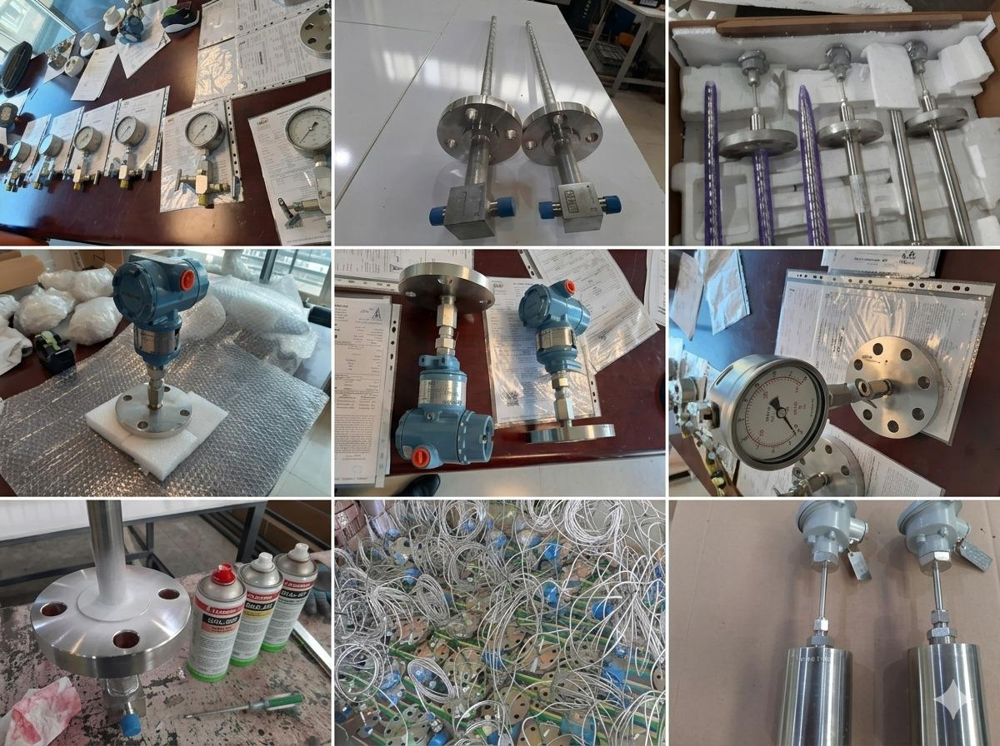

A Presentation of Academic & Industrial Projects
Attention to Professor Götz
March 2026, Kaiserslautern
Sara Bavi
Academic Background
- Master of Science: Control and Automation Engineering
RPTU Kaiserslautern | Expected: 04/2026 | Grade: 1.5 - Master of Science: Electrical Engineering (Energy Systems)
Shahid Beheshti University | Tehran, Iran | Grade: 1.5 - Bachelor of Science: Electronics Engineering
Azad University | Tehran, Iran | Grade: 2.2
Core Technical Skills
Vision & Communication
- Computer Vision: Real-time pipelines (OpenCV, SDKs), 3D vision, calibration, and image filters (Gabor, CLAHE, Gaussian).
- Communication & IoT: MQTT, Modbus TCP, CAN Bus, HART, PROFIBUS; SCADA architectures; Node-RED & JSON flows.
- Control & Simulation: Motion control algorithms, path detection, 6-DOF manipulators; MATLAB & Simulink modeling.
- Software Engineering: Python, C/C++, JavaScript; Git, Docker, and Linux environments.
Core Technical Skills
Hardware & Instrumentation
- Embedded Systems: ARM, Intel, NVIDIA Jetson; 2D/3D camera integration; PLC logic verification & validation.
- Design & Prototyping: PCB assembly (SMD/DIP), hardware troubleshooting, and circuit testing.
- Field Instrumentation: Expert selection, commissioning, and calibration of Temperature, Pressure, Level, and Flow rate sensors.
Research Assistant (HiWi)
RPTU | September 2024 – March 2026
Automated SCADA Generation
Data Flow Pipeline

Generated SCADA Dashboard

System Validation (Digital Twin)

Research Assistant (HiWi)
RPTU | March 2024 – June 2025
Battery Monitoring System
Architecture & Protocols
- Hardware: Battery Cabinet, Booster, Ethernet Modem.
- Protocols: Modbus TCP/IP & CAN Bus.
System Demo
R&D Engineer
Vetron Typical Europe | Part time | July 2025 – Present
Seam Path Detection
Hardware & Integration

System Dynamics
Algorithm & Path Detection
Academic Research in RPTU University
- Study on A Benchmark for Multi-Robot Planning paper Details: A_Benchmark_for_Multi_Robot_Planning.pdf
- Pick-and-Place Robot with ROS2 and Arduino for Color-Based Sorting Details: Pick_place_01.pdf
A Benchmark for Multi-Robot Planning
- Algorithms: Benchmarked several multi-robot path finding algorithms, including A*, CBS, ECBS, and EECBS.
- Frameworks: Utilized ROS 2, Gazebo, and Nav2 to study multi-agent navigation.
- Integration: Leveraged the Robotics Middleware Framework (RMF) within realistic 3D simulated environments.

Pick and Place Robot
Task Overview:
- Development of Pick-and-Place sequence using a 6-DOF robotic manipulator
- Integration of Computer Vision for color detection and object localization
- Implementation of trajectory planning logic to motion control and object handling
- Design of color-specific sorting routines, mapping detected hues to designated workspace coordinates
- Establishment of hardware-software communication between ROS2 and Arduino


Professional Background (in Iran)
- Deputy Director in Development | 2019-2023 | 2R Inspection www.2rinspections.it
- Senior Technical Inspector | 2018-2019 | 2R Inspection www.2rinspections.it
- Electronics Engineer | 2015–2018 | Parsjahd Group parsjahd.com
Highlight achievements
Parsjahd Group
- Field instrument selection for +10 projects including Pressure and Temperature Transmitters, Flowmeters, and Accessories.

Highlight achievements
2R Inspection & Quality Services
- Logic test for PLC Control System verification based on Cause and Effects Matrix.
- 14,000 I/O check between Field and Control Room of Natural Gas Compressor Station project in ARSANJAN

Academic & Industry References
Univ.-Prof. Dr. Steven Liu
RPTU Kaiserslautern-Landau
Chair of Control Systems (LRS)
Relationship: HIWI Leiter & Course Instructor
Email: steven.liu@rptu.de
Tel: +49 631 205 4535
Room: 12/332
apl. Prof. Dr.-Ing. Daniel Görges
RPTU Kaiserslautern-Landau
Institute of Electromobility
Relationship: Thesis Supervisor & Course Instructor
Email: goerges@eit.uni-kl.de
Tel: +49 631 205 2091
Room: 12/266
Holger Labes
CEO, VETRON TYPICAL Europe GmbH
Relationship: Industry Supervisor
Email: Holger.Labes@vetrontypical.com
Tel: +49 6301 320750
Address: Clara-Immerwahr-Str. 6, 67661 Kaiserslautern
Michael Dinges
HW/SW Entwicklung Leiter, VETRON TYPICAL Europe GmbH
Relationship: Direct Manager
Email: Michael.Dinges@vetrontypical.com
Tel: +49 6301 320750
Address: Clara-Immerwahr-Str. 6, 67661 Kaiserslautern
Reza Hassanpour
CEO, 2R Inspection & Quality Services
Relationship: Industry Supervisor
Email: r.hassanpour@2r-co.com
Tel: +989123242157
Address: No.45, Valiasr st. Tehran, Iran
Ali Shahrabi
CEO, Parsjahd Group
Relationship: Industry Supervisor
Email: ali.shahrabi@parsjahd.com
Tel: +989121518819
Address: No.16th, Beyhaghi Blvd., Tehran, Iran